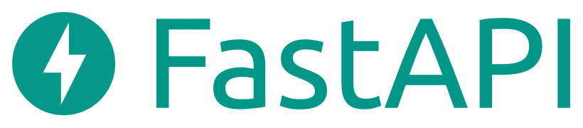

Ein Frontend für die Legacy -
Netzplanung in der
Telekommunikation
FOSSGIS 2023, Berlin
16. März
Marc Jansen, terrestris &
Matthias Daues, Vodafone
Marc Jansen

- Geschäftsführer terrestris
- Kernentwickler OpenLayers
- Konzeptionell & Coding
- OSGeo Foundation Charter Member
- Vorträge zu FOSS4G national & international
- jansen@terrestris.deE-Mail
- @marcjansenGitHub
Abstract
Netzbetrieb und Netzplanung stecken bei Versorgungsunternehmen wie der Vodafone ganz tief im Kern der internen Sytemwelt - Gegenstand existentieller Prozesse und historisch tief verstrickt in Ablauf- und Aufbauorganisation.
Wir berichten von der Integration der bestehenden GIS- und Dokumentationssystemen durch eine schlanke, cloud-native full stack open source Anwendung für die Planung neuer Netzbestandteile, die alte Zöpfe nicht abschneidet, sondern zu einem e2e-prozess verbindet.
Roadmap surprise
- Ausgangslage
- Anwendung: Gebietsauswahl
- Bausteine & Highlights
- Take-Away: Team, Komponenten & Vorgehen
Ausgangslage
- Neue Prozesse für neue Themen, sonst bestimmt Tooling die Herangehensweise
- Bestandssysteme und deren Abhängigkeiten
- wichtig & dringend: neues Tool
- Leitfrage: Wie bauen wir jenes Tool, so dass es mit dem — und nicht gegen den — Bestand arbeitet
Vodafone Tech 2025
Ausgangslage
- Inhaltliche Fragestellung ist seitens Vodafone gegeben
- Schwerpunkt ist die flexible technologische Umsetzung
- OSS-Partizipation und Standards
- Den konkreten Use-Case der Vodafone werden wir nicht thematisieren
Anwendung: Gebietsauswahl
- Fiktives Szenario: Wir planen politischen Haustürvertrieb
- Ziel: Lauflisten und gezieltes Werbematerial für Wahlkämpfer
- Was haben wir: Adress- und Gebäudebestand, Demographie, Wahlverhalten
- Wir suchen Wechselwähler
Bausteine & Highlights
- Frontend Framework
- Mapping Library
- UI Framework
- Backend / API Framework
- Database

- Authentication / IAM
- ETL

- GitHub / CI / CD / Cloud
Take-Away
- Team +
- Komponenten +
- Vorgehen
- ➜ Success
Ausblick
- In den kommende Monate kommen sicherlich neue Anforderungen, wir sind gerüstet, auch dank OSS
- Investion in Know-How, Prozesse und Zusammenarbeit
- ➜ Bauhütten-Prinzip
Impressum
Autoren
Matthias Daues & Marc Jansen
Kontakt
Matthias DauesVodafone GmbH
matthias.daues@vodafone.com
Marc Jansen
terrestris GmbH & Co. KG
jansen@terrestris.de
Lizenz
Diese Folien sind unter CC BY-SA veröffentlicht.